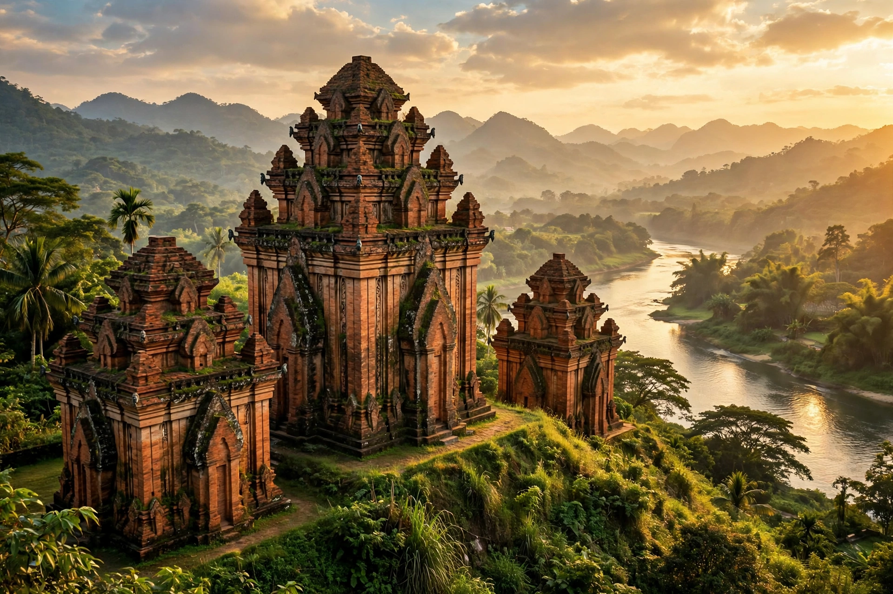

| Location | Nha Trang, Khánh Hòa Province, Vietnam |
| Culture | Champa (Cham) |
| Built | Between 7th and 13th centuries AD |
| Dedicated to | Yan Po Nagar, goddess of the country |
| Material | Fired red brick, sandstone |

Po Nagar is a Cham temple complex built between the 7th and 13th centuries near present-day Nha Trang in south-central Vietnam. It was dedicated to Yan Po Nagar, the goddess of the country — a local Cham deity identified with the Hindu goddesses Bhagavati and Mahishasuramardini — and remains an active pilgrimage site for Cham and Vietnamese worshippers.
The site, on a granite hill called Cu Lao overlooking the mouth of the Cai River, was a place of worship from early in the Champa kingdom's history; a wooden shrine burned in a raid in AD 774 was replaced in stone, and a stele of 784 records the temple's restoration. The surviving towers were built and rebuilt over several centuries, principally under the Champa kings of the medieval period. The complex originally had more towers; four survive, along with a columned meditation hall (mandapa).
The towers are built of tightly fitted red bricks, joined with a still-debated mortarless or resin-based technique, and richly carved with images of deities, dancers and animals. The tallest, the North Tower (Thap Chinh), rises about 23 metres; its pyramidal roof of receding tiers shelters a sanctuary containing a black stone statue of the goddess in her ten-armed Durga form. Smaller towers honour Indra, Shiva-related deities and the goddess's family.
The annual Po Nagar (Thap Ba) festival, held in the third lunar month, draws thousands of pilgrims with processions, traditional Cham dance and offerings — one of the largest religious festivals of central Vietnam.